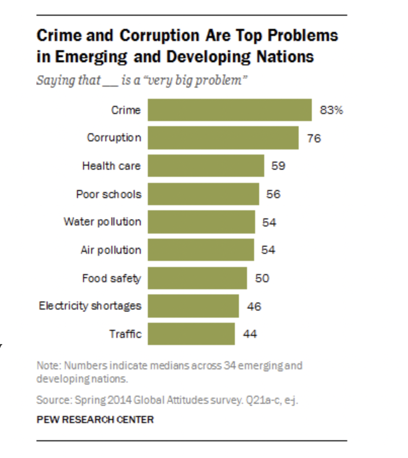
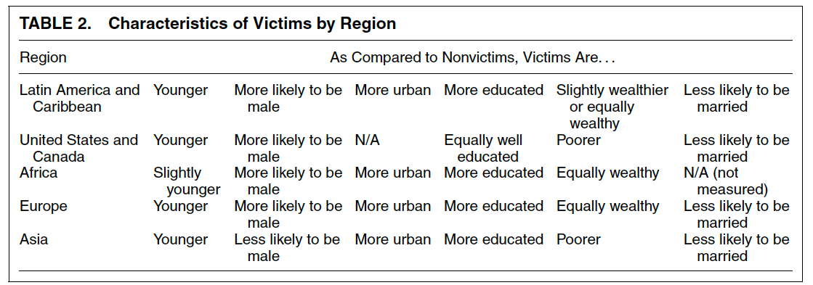
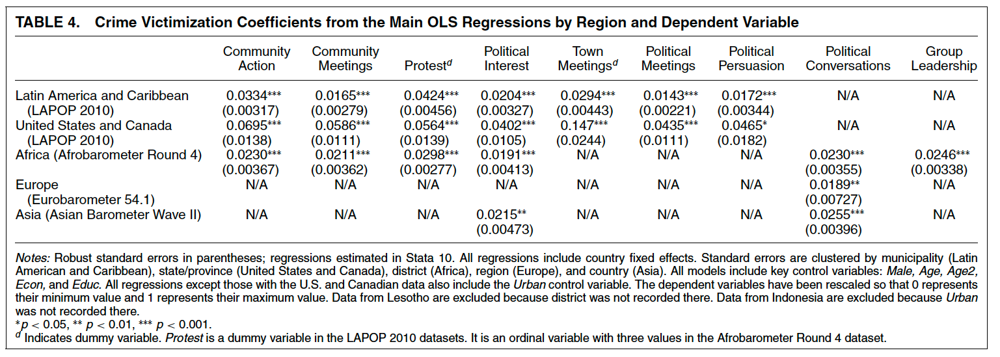
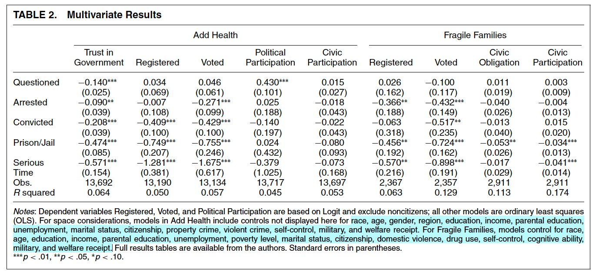

Crime and Punishment I
Agenda
Bateson, 2012
Weaver and Lerman, 2010
Why does the state exist?
The provision of security as the central reason for the state
- Hobbes: Prevent chaos \(\rightarrow\) Protect our lives
- Locke: Prevent abuse \(\rightarrow\) Protect our property (including our lives)
What do states do?
States provide public goods/services:
- Health, schools, infrastructure
- The provision of security (internal and external)
Security and Development
- Security often thought as a prerequisite of development
- Why?
- Conversely, internal violence (civil war) characterized as “development in reverse” (Collier, 2004)
- Why?
The inevitability of internal conflict
Yet, states often fail to provide internal security
Particularly developing states
Political violence, civil war, and most commonly… crime
Crime in the Developing World
Crime often identified as main concern of developing-world citizens

Crime in the Developing World
Consequences for Development?
In Latam, the most violent region in the world, the direct costs of crime in 2022 reached 3.44% of the region’s GDP (Source: IDB)
- “The cost of crime is equivalent to 78% of the public budget for education, double the public budget for social assistance, and 12 times the budget for research and development.”
At least 115k people were murdered in Latin America and the Caribbean during 2023
Police
- The state’s main tool to respond to insecurity is the police
- Yet police in developing context are often repressive, abusive, over-target poor and marginalized communities.
- Could policing backfire?
Crime and its Punishment
- What are the consequences of criminal violence?
- What are the consequences of poor policing?
Bateson, 2012
Research Question: Can crime motivate people to participate more in politics?
- If the answer is “no” then crime could trigger a vicious circle of disengagement \(\rightarrow\) poor governance \(\rightarrow\) worse developmental outcomes
- If the answer is “yes” then violence today might (ironically) mean better outcomes tomorrow: crime \(\rightarrow\) participation \(\rightarrow\) Better development outcomes
Theoretical Expectations
Why might we expect crime to depress political participation?
- Fear
- Cost of participating
Why might we expect crime to spur political participation?
- Psychological reasons
- Instrumental reasons
A quick aside
What were your priors?
Context / Data
Author leverages four regional surveys
- Americas Barometer
- Eurobarometer
- Asian Barometer
- Afrobarometer
You can download all of these surveys yourself!
Measurement
What is the dependent variable?
- Non-electoral participation
- community action
- protest
- political interest
- town meetings
What is the treatment or independent variable?
- Direct or indirect criminal victimization in the past year
Research Design
CIA or Selection on Observables
Treatment Group:
- Direct or indirect victims
Control Group:
- Non-victims
Controls:
- Age, Education, Gender, Urban, Country FE
Threats to Inference
The author makes causal claims, what crucial assumption is she making?
- No confounders!
- After including controls, who gets victimized is independent of participation decisions
- Assumption would not hold if:
- People who participate more are more likely to be crimed
- People who participate more are more likely to report they were crimed
Is Causality Plausible?

Results

Updating on the Results
Crime victims everywhere participate more in politics, regadless of the type of crime
- Effect is roughly the same as 5-10 years of education (!!!)
- Author also finds that victims are more skeptical of democracy, support authoritarianism, and vigilantism
Q1: Do we believe the results? Q2: What implications for democracy and development?
Weaver and Lerman, 2010
Context
For US citizens, contact with the criminal justice system is more common now than ever before
- 1/100 US citizens are incarcerate
- 1/3 black men will sever time in prison
- Disadvantaged population routinely have unwanted/disciplinary interactions with police.
Authors call the spacial concentrated, punitive, surveillance-oriented system found in some (minority) communities “carceral state”
Research Question
How and in what ways encounters with the criminal justice system influence citizens’ political attitudes?
More specifically:
- How does exposure to the criminal justice system socialize those exposed to it?
- What do people learn from constant, unwanted, aggressive, interactions with the state’s criminal system?
Theory
Interactions with the criminal system shape participation through two channels:
- Resources:
- Fewer resources \(\rightarrow\) less political participation (i.e. spend $ in court, have a criminal record, etc.)
- Learning:
- What the authors call “interpretative effects”
- Encounters with bureaucrats teach citizens’ about the goals and nature of the government
- Bad experiences with police, courts, etc. may translate into bad impressions about the government
Hypotheses
Interactions with the criminal justice system will:
- Depress participation and civic engagement
- Reduce trust in the government
Data
Data comes from two panel surveys
National Longitudinal Study of Adolescent Health (Add Health)
- “20,000 adolescents who were in grades 7-12 during the 1994-95 school year, and have been followed for five waves to date”
Both surveys are publicly available and VERY RICH (and linked in the slides)
Measurement
Treatment:
- Criminal Justice Contact: no encounters, stopped by the police, charged, arrested, served time
Outcomes:
- Electoral participation
- Civic participation
- Political participation
- Trust in government
- Civic obligations (jury, military)
Research Design
CIA or Selection on Observables
Multivariate OLS regression
Threats to inference: confounders!
What might predict participation and contact with criminal system?
Personality, criminality, income, education, etc.
Authors try to control for all these and run placebos to test whether they might be driving the results
Results

Implications
- Criminal justice contact deters political and civic life
- Especially for marginalized populations who are over-policed
- Who should security policy be responsive to?
- Implications for democracy?
- For inequality?
Upside down world?
- Both crime and its punishment have important implications for politics
- Crime engenders participation and policing deters it (???)
- A cause and a consequence of development
- What is the appropriate response to crime? A very hard question to answer
For researchers
- Both of these papers were published in the highest ranked journal of political science
- Both use survey data which you yourself could have downloaded
- You could have run all the analyses!
- Why are they published where they are?
- Why are they so influential?